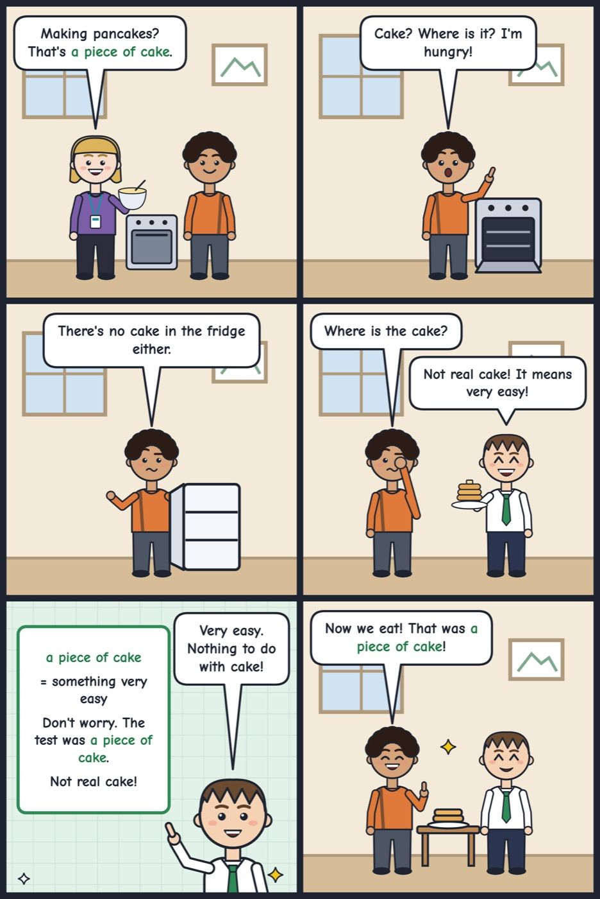

a piece of cake
Something very easy to do.
Don't worry about the test. It was a piece of cake.
Tip: Use it after 'was', 'is' or 'be' to describe a task that turned out easy, often after you've finished it: 'The interview was a piece of cake.' Don't use it for people or for things that are cheap.
Hear it in conversation
Workbook
1. What does it mean?
In this conversation, what does 'a piece of cake' mean?
2. Fill the gap
I thought the presentation would be stressful, but once I had my notes, it was a .
3. Choose the best reply
Ken: How was the driving test? Was it as hard as you feared?
4. Your turn: speak
Tell me about something you were nervous about doing, but that turned out to be easy.
Show an example answer
I was really nervous about moving to a new city for work, mostly because I had to find a flat on my own. In the end, it was a piece of cake. I found a great place in two days, and my new colleagues helped me with everything else.
Answer key: a piece of cake
- 1. C. Something very easy to do
- 2. piece of cake
- 3. B. Not at all. Honestly, it was a piece of cake.
- 4. Example: I was really nervous about moving to a new city for work, mostly because I had to find a flat on my own. In the end, it was a piece of cake. I found a great place in two days, and my new colleagues helped me with everything else.
See it in a comic
